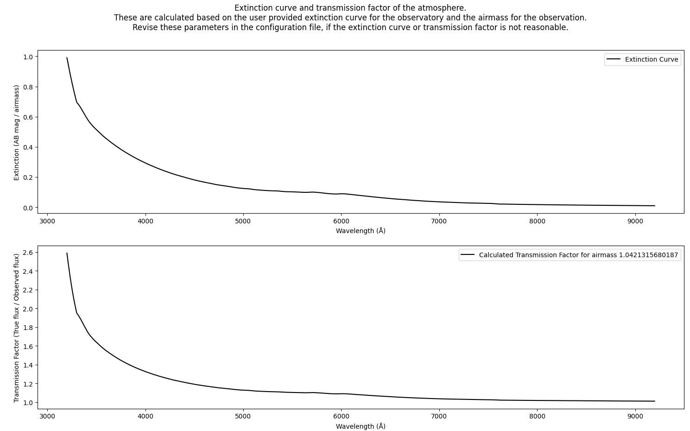
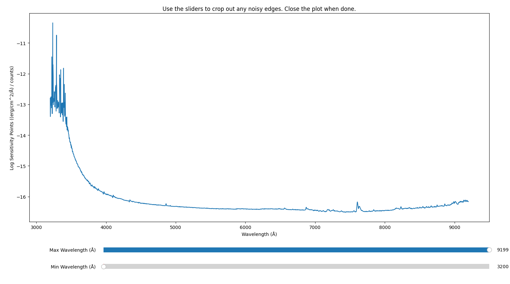
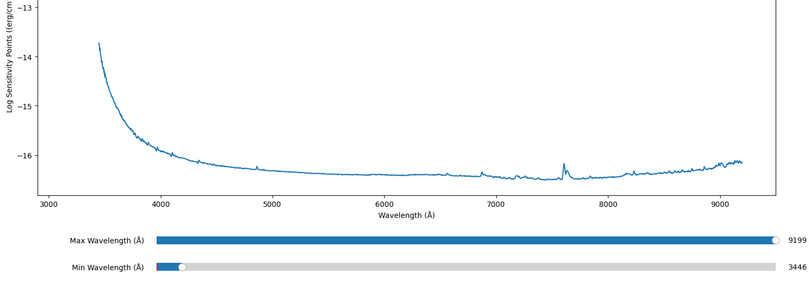
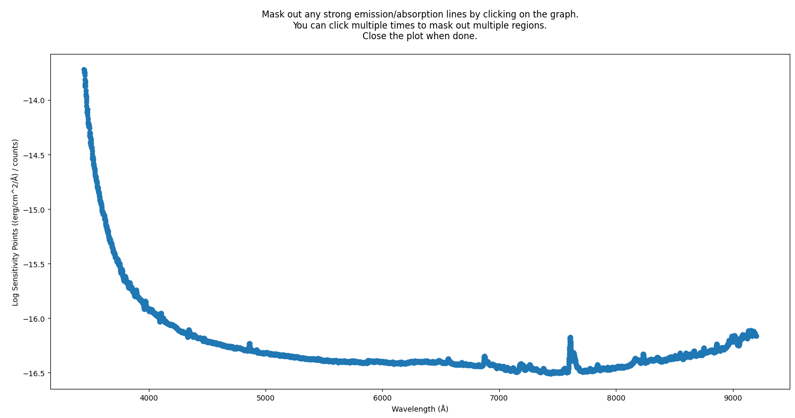
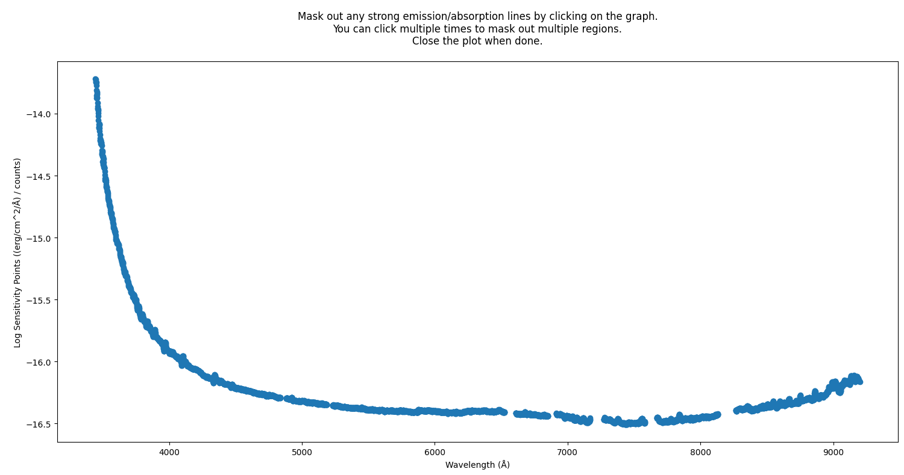
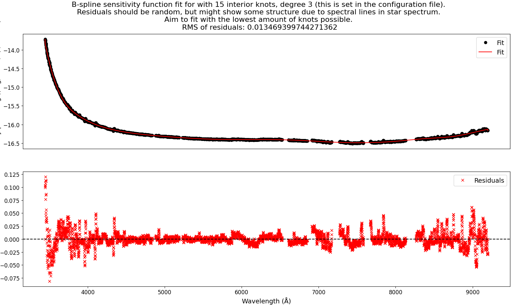
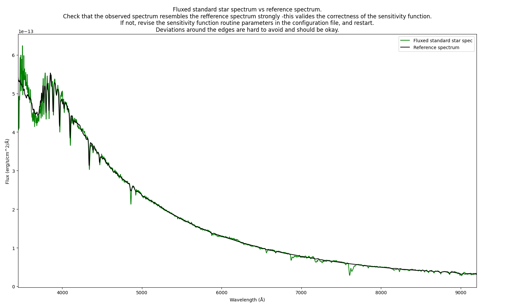

Sensitivity function¶
This procedure is used to obtain a sensitivity function. The sensitivity function is essentially a conversion factor between observed counts pr. second and flux in physical units. For further explanation, see the further description of the sensitivity function.
Quickstart¶
The routine is called by the command:
pylongslit_sensitivity_function PATH_TO_CONFIG_FILE
The procedure will first show the extinction curve and the transmission factor:
{kind=link}
For how this is calculated, and how it is used, please see the
description of the extinction curve and the transmission factor.
The transmission factor should be >= 1.0 for all wavelengths.
The routine will then calculate the sensitivity points in log-space (see math behind the sensitivity function), and you can crop away any noisy edges that would corrupt later fitting (taken from the SDSS_J213510+2728 example dataset - with recommended cropping shown):
 {kind=link}
{kind=link}
Further, a following interactive plot will allow you to mask any strong emission/absorption lines that would corrupt later fitting, by clicking on them (with recommended amount of masking shown):
 {kind=link}
{kind=link}
A polynomial fit will then be performed to the sensitivity points:
{kind=link}
The goal is to see a smooth fit with mostly random residual distribution around zero. However, the star spectrum will still have some artifacts such as absorption lines from the sky, and these might show up as structures in the residual plot. Make sure that these are small compared to the general order of magnitude of the data
The parameters that can control the fit are:
"sensfunc": {
"fit_order": 3,
"use_bspline": true,
"knots_bspline": 15
}
The "fit order" is the order of the polynomial fit. If "use_bspline" is set to true,
a B-spline fit will be performed instead of a regular polynomial. This should only be done if regular
polynomial fit fails. The number of knots in the B-spline fit is set by
"knots_bspline" - you should use as few knots as possible to avoid overfitting.
Lastly, a final QA plot will be shown, where the reference standard star spectrum is plotted together with the observed standard star spectrum, now flux-calibrated with the fitted sensitivity function (from the SDSS_J213510+2728 example dataset):
{kind=link}
The two spectra should resemble each other closely, but you might see some deviations at the edges. If the two spectra are very different, you will unfortunetly have to revise the whole pipeline process up to this point, as the fault might be both in the sensitivity function and in the previous steps ending with the 1d extraction.
If the two spectra are similar, you can accept this as a strong indication that the pipeline run until this point has been successful.
You can see the chater about flux calibration on how the standard star gets calibrated with the sensitivity function. Yo will have to set these parameters to get a succesful calibration (with example values):
"standard" : {
"exptime": 30,
"airmass": 1.0421315680187
}
The "exptime" is the exposure time of the standard star observation, and the "airmass" is the airmass
of the standard star observation.
The sensitivity function is saved in the output directory defined in the configuration file
in machine-readable format, with the filename sensfunc.dat.
The reference spectrum¶
In order to produce a sensitivity function, you will need to have a flux-calibrated spectrum of the standard star you have observed in AB magnitude units. For the tutorial data, these are already provided.
For the SDSS_J213510+2728
example dataset, the standard star is BD332642, and the flux file is taken from:
https://www.ing.iac.es/Astronomy/observing/manuals/html_manuals/tech_notes/tn065-100/bd33.html.
For the GQ1218+0832
example dataset, the standard star is Feige110, and the flux file is taken from:
https://www.ing.iac.es/Astronomy/observing/manuals/html_manuals/tech_notes/tn065-100/f110.htmls.
The path to the reference spectrum is set in the configuration file, under the parameters:
"standard" : {
"starname": "BD332642",
"flux_file_path": "/home/kostas/Documents/PyLongslit_dev/database/bd33a.oke"
}
The "starname" parameter is used for logging only. The refrence spectrum file should have
two columns: wavelength and flux in AB magnitude units.
Extinction curve and the transmission factor¶
You will need to provide an extinction curve in AB magnitude/airmass units for the observatory your data was taken at. The extinction curve is a function of wavelength that describes how much light is absorbed by the Earth’s atmosphere at the observatory. The extinction curve for the example data is provided in the same file, as both datasets are taken from the Roque de los Muchachos Observatory. The extinction curve is taken from: https://www.ing.iac.es/Astronomy/observing/manuals/html_manuals/wht_instr/pfip/node244.html.
The path to the extinction curve is set in the configuration file, under the parameter:
"flux_calib": {
"path_extinction_curve": "/home/kostas/Documents/PyLongslit_dev/database/lapalma.dat"
}
The extinction curve is used to estimate a transmission factor. This factor describes the relationship between the observed flux and the real flux:
where \(F_{\text{true}}\) is the true flux, \(F_{\text{obs}}\) is the observed flux, \(A\) is the extinction, and \(X\) is the airmass.
Math behind the sensitivity function¶
When flux-calibrating the extracted 1d-spectrum from detector counts, a sensitivity function needs to be obtained first. This function is obtained by fitting a model to an array of sensitivity points \(S_{points}(\lambda)\). These points are obtained by dividing a flux-calibrated spectrum of a standard star (that is in the wanted units) with the obtained 1d-spectrum in counts per second of the same star. In PyLongslit default units:
Fitting a model to these points gives the conversion factor (sensitivity function) \(S(\lambda)\) between observed counts per second \(C_{1d}(\lambda)/s\) to flux in physical units \(Flux(\lambda)\):
In the software, the fit for \(S(\lambda)\) is performed in (10-base) log-space (\(S_{log}(\lambda)\)). This is because the observed 1d-standard star spectrum in counts will still have some artifacts such as absorption lines from the sky, and these might corrupt the fit. Fitting in logarithmic space scales these artifacts down.